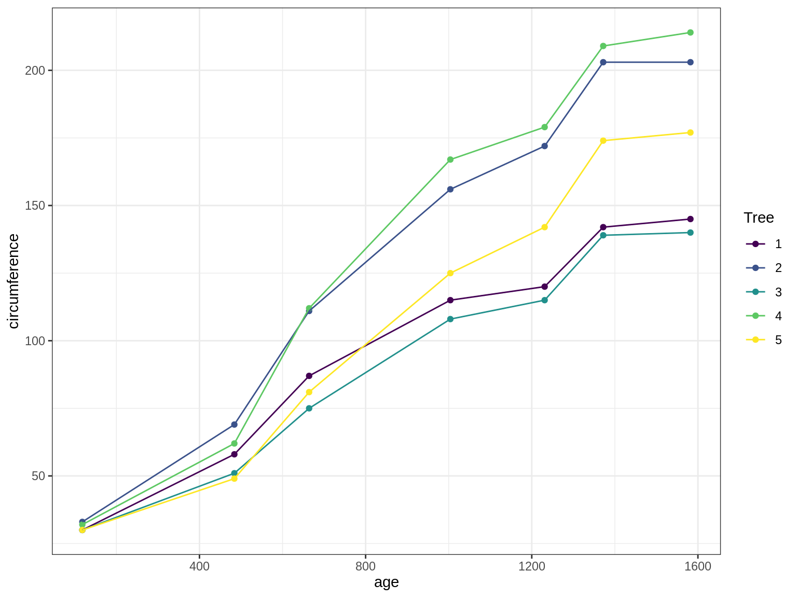

library(tidyverse)
library(lme4)
library(lattice)
theme_set(theme_bw())Linear Mixed Models
Exercices
Preliminary
Functions from R-base and stats (preloaded) are required plus packages from the tidyverse for data representation and manipulation. We also need the lme4 package which is the standard for fitting mixed-model. lattice is used for graphical representation of quantities such as random and fixed effects in the mixed models.
1 The Orange data
The Orange data is a classical data set provided with the datasets package included with R. It consists in a 35-row data frame with records of the growth of 3 orange trees, giving their circumference against their age:
data(Orange)
## we force the sorting of the levels (1,2,3)
Orange$Tree <- factor(Orange$Tree, levels = unique(Orange$Tree))
Orange %>% as_tibble() %>% rmarkdown::paged_table()Show the code
pl <-
Orange %>%
ggplot() + aes(x = age, y = circumference, color = Tree) +
geom_point() + geom_line()
pl
Fit different linear (fixed effect) models to this data and compare them
Fit different linear mixed effect models to this data and compare them (with/without random effect for the slope/intercept)
Compute confidence intervals on the parameters, compute the individual parameters and plot the random effects for the best model
Compare the ML and the REML estimates for this model
2 The Pastes data
The Pastes data is a another classical data set provided with the lme4 package. It describes the strength of a chemical paste product whose quality depends on the delivery batch, and the cask within the delivery. There are 60 observations, 10 levels of batch and 3 levels of cask.
data(Pastes)
Pastes %>% as_tibble() %>% rmarkdown::paged_table()We can have a quick look on summary statistics in each level of each factor:
Pastes %>%
group_by(batch, cask) %>%
summarise(mean_strengh = mean(strength), sd_strength = sd(strength), n_replicat = n()) %>%
rmarkdown::paged_table()`summarise()` has grouped output by 'batch'. You can override using the
`.groups` argument.There is obviously some structure in the data set and an effect of the batch level:
Show the code
Pastes %>%
ggplot() + aes(x = fct_reorder(batch, strength, median), y = strength) + geom_boxplot() + geom_jitter()
We can plot the cask as the function of the strength, conditionning on batch (and ) the later being reorder by strength)
Show the code
lattice::dotplot(cask ~ strength | reorder(batch, strength), Pastes,
strip = FALSE, strip.left = TRUE, layout = c(1, 10),
ylab = "Cask within batch",
xlab = "Paste strength", jitter.y = TRUE)
Build simple linear models for this data (with batches, then with casks effects)
Build mixed models for this data (with random effects on batches, then casks effects)
What is the main cause of the variability of the paste strength?
3 The Oats data
These data have been introduced by Yates (1935) as an example of a split-plot design. The objective is to assess the effect of treatment (level of nitrogen) on the yield of different varieties of oat.
The treatment structure used in the experiment was a 3 x 4 full factorial, with three varieties of oats and four concentrations of nitrogen. The experimental units were arranged into six blocks, each with three whole-plots subdivided into four subplots. The varieties of oats were assigned randomly to the whole-plots and the concentrations of nitrogen to the subplots. All four concentrations of nitrogen were used on each whole-plot.
The data are available from the nlme package:
data(Oats, package = "nlme")
# keep the original order of the levels of Block and Variety
Oats$Block <- factor(Oats$Block , levels = unique(Oats$Block))
Oats$Variety <- factor(Oats$Variety, levels = unique(Oats$Variety))
Oats %>% as_tibble() %>% rmarkdown::paged_table()The xtabs function creates a contingency table using the handy formula notation which allows us to check that the data indeed follows a full factorial design:
xtabs(~ Block + Variety, Oats) Variety
Block Victory Golden Rain Marvellous
I 4 4 4
II 4 4 4
III 4 4 4
IV 4 4 4
V 4 4 4
VI 4 4 4Plot the data in such a way as to visualize the effect of the fertilizer-concentration on the yield as well as possible differences between blocks and varieties.
Fit the Oats data with linear mixed effects model, assuming a linear effect of the fertilizer concentration on the yield.